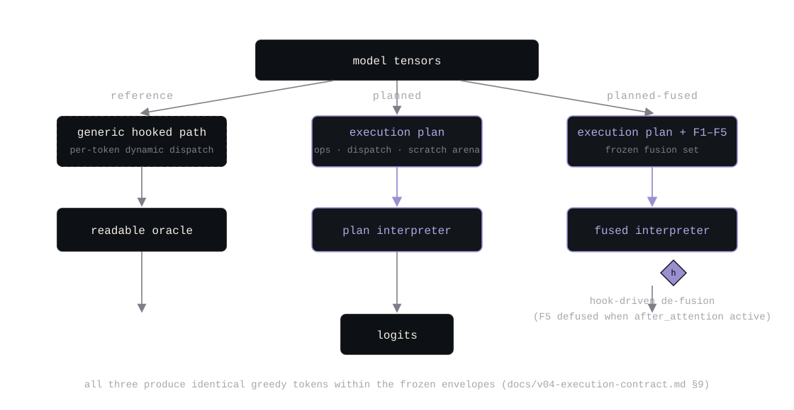
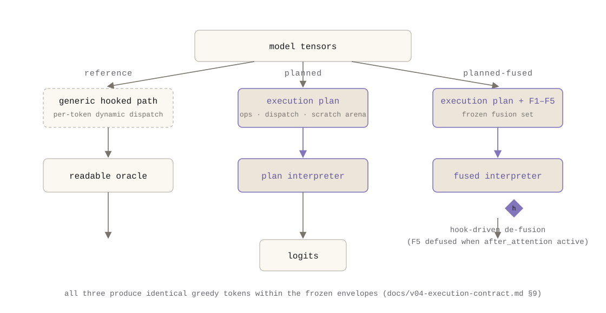
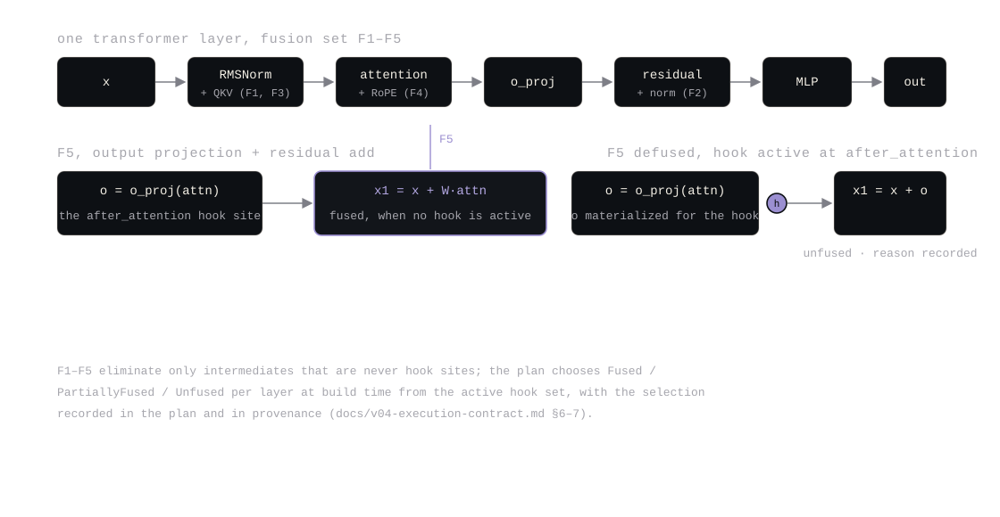
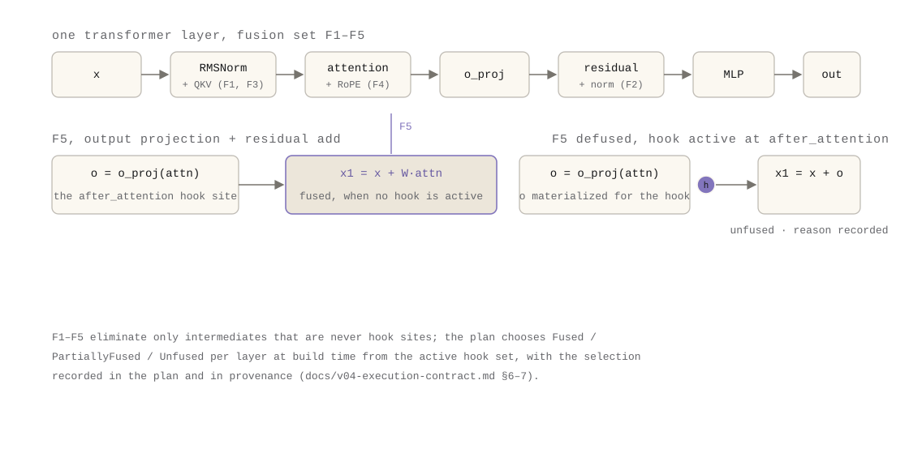
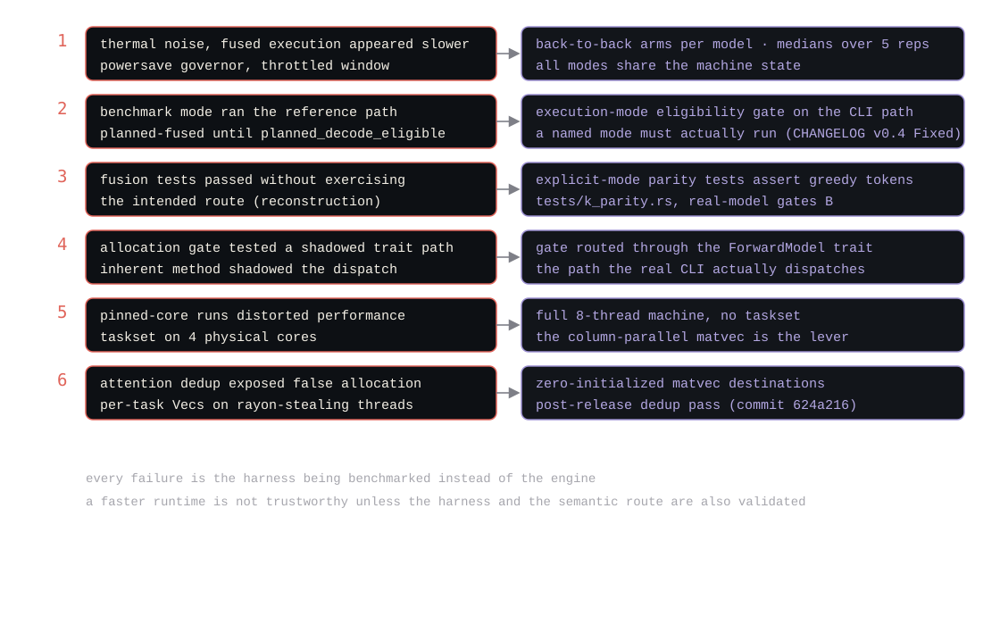
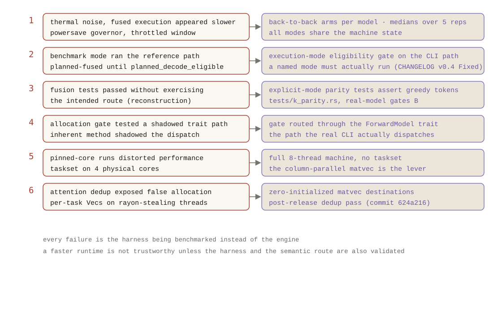

complete draft with explicit citations to repository artifacts. figures are embedded as SVG
(dark/light theme variants under figures/) with captions citing the evidence.
performance numbers come from
two places: the release-time matrix (artifacts/benchmark-v04/2026-08-04/SUMMARY.md)
and a 2026-08-04 reproduction from the v0.4.0 tag build, recorded in
artifacts/benchmark-v04/2026-08-04/part4-reproduction.md. two of the six
"unreliable witness" failures are reconstructed from tests, the changelog, and git history;
each is marked as such and cites the commit or test that supports it.
most of the work in decoding one token is deciding what to do, not doing it. v0.4 moves that decision out of the loop, without moving the hooks with it.
v0.3 left decode on the generic hooked forward path: for every token, for every layer, the same
work was rediscovered. which tensor does this projection read? which kernel handles its dtype?
where does the output go? does any hook target this stage? the v0.4 contract
(docs/v04-execution-contract.md) froze the reference sequence before touching it ,
embedding, per-layer RMSNorm → q/k/v → RoPE → KV store → attention → output projection →
residual → MLP → residual → final norm → head (contract section 3), and then named the waste
(section 9): per-token shape/dispatch rediscovery, dynamic hook checks against a registry, and
per-token scratch allocation.
none of that work changes between tokens. the model does not get a new architecture at step 42. the only thing that changes per token is the token itself.
the v0.4 release could have taken the usual route: keep the generic path, add a fast path beside
it, and hope the fast path matches the slow one. the contract forbade that in two ways. first,
the out-of-scope list includes no second hidden runtime that bypasses hooks, an
optimized path that researchers cannot hook is not an optimization, it is a different program.
second, kernels are not duplicated: the v0.3 scalar and AVX2 Q4_K/Q6_K matvecs are the only
matvec implementations, and the planned path resolves a kernel per tensor through the same
resolve_kernel function the legacy path uses, asserted equal by tests (contract
decision D6).
so the constraint, stated once: plan the work once per model; execute it per token; keep the six semantic hook sites observing the exact same tensors at the exact same call sites.
v04-plan/1). ember inspect-plan prints it; benchmarked runs write
execution-plan.json.--execution reference keeps the v0.3
generic hooked path as the readable oracle; planned runs the identical operation
sequence through the plan interpreter with no fusion; planned-fused applies the
frozen fusion set (contract section 9). the three stay separable for validation.o tensor ,
which is the after_attention hook site. if that hook is active on a layer, the
planner selects the unfused route for that layer, and the reason is recorded in the plan and
in provenance (contract sections 6–7). a hook must never silently observe a different
semantic tensor because fusion changed the graph.bench-decode --profile-operators records
per-operator timing on the planned path, so the next optimization is chosen from a table, not
a guess.



the measured speedup was real. getting the measurement to be real took six separate failures, and they are part of the story because each one is a place a faster runtime could have lied to its own authors.
powersave governor, recorded in every benchmark's run_metadata
(artifacts/benchmark-v03/bench-summary.json), so absolute tokens/second is
thermally variable, and early fused runs landed on a throttled window and looked like a
regression. the fix was protocol, not code: back-to-back arms per model so all execution
modes share the machine state, medians over 5 measured repetitions, no cross-session
comparisons (artifacts/benchmark-v04/2026-08-04/SUMMARY.md).
planned-fused silently ran the reference path until
planned_decode_eligible accepted the mode" (CHANGELOG.md, v0.4
fixed). a flag that names an execution mode but does not gate it is a flag that can lie.
tests/k_parity.rs): the model-level gate b tests for planned/fused exist and
pass, but a fused run requested through the CLI could fall through to the reference path
before the fix, so a test suite can be green while the named mode never runs. the response
was the eligibility gate plus parity tests that set the execution mode explicitly and assert
the greedy tokens (k_parity.rs, v04_planned_matches_reference_real_model).
tests/k_parity.rs). an inherent method call can
bypass the plan interpreter entirely; the allocation test only meant something once it routed
through the trait that actually dispatches.
artifacts/benchmark-v04/2026-08-04/SUMMARY.md).
Vec allocations "that could surface as a spurious allocation on
a rayon-stealing thread" (commit 624a216, main, 2026-08-04, after v0.4.0, hence
"later"). the gate e numbers were right; the accounting had not yet caught every allocation
site that only a warm thread pool visits.
the common thread: every one of these is a case where the harness, not the engine, was the thing being benchmarked. a faster runtime is not trustworthy unless the benchmark harness and the semantic execution route are also validated.


gates A–G were pre-registered in the contract before implementation (contract section 13) and could only be tightened:
max_abs ≤ 1e-4, over the standard shape battery; the
column-parallel matvec is bit-identical to the serial kernel (same per-column accumulation
order), and the planned dispatch kernel equals the legacy dynamic dispatch (debug assert +
tests).tests/k_parity.rs,
env-gated real-model test).after_attention is active so the hook sees the materialized o
tensor.src/llama.rs, planned_decode_is_zero_steady_state_allocation).
the release-time matrix (artifacts/benchmark-v04/2026-08-04/SUMMARY.md; 64-token
single-token decode, 1 warmup, 5 reps, medians, 8 threads, full machine):
| model | reference tps | planned | planned-fused | planned ratio | fused ratio |
|---|---|---|---|---|---|
| Llama-3.2-1B Q4_K_M | 1.48 | 3.42 | 3.41 | 2.32× | 2.31× |
| Llama-3.2-1B Q6_K | 1.43 | 3.31 | 3.29 | 2.32× | 2.31× |
| Qwen2.5-1.5B Q4_K_M | 1.52 | 4.04 | 4.03 | 2.66× | 2.66× |
| Qwen2.5-1.5B Q6_K | 1.97 | 4.06 | 3.89 | 2.06× | 1.97× |
that is the "roughly 2.0–2.7×" claim, stated precisely: vs the v0.3 reference path on the same binary, same protocol, four primary combinations. it is not a claim against llama.cpp, the v0.4 matrix records no llama.cpp arm, and the contract's final framing repeats that no competitive parity is claimed unless evidence unexpectedly demonstrates it (contract section 19).
reproduced on 2026-08-04 from the v0.4.0 tag build (binary sha
23322cd3…, reproducible, the rebuild matched; full record in
artifacts/benchmark-v04/2026-08-04/part4-reproduction.md), all four primary
combinations with the same protocol:
| model | reference tps | planned | planned-fused | planned ratio | fused ratio |
|---|---|---|---|---|---|
| Llama-3.2-1B Q4_K_M | 2.61 | 5.52 | 5.28 | 2.11× | 2.02× |
| Llama-3.2-1B Q6_K | 2.57 | 4.61 | 4.93 | 1.79× | 1.91× |
| Qwen2.5-1.5B Q4_K_M | 2.01 | 4.39 | 4.22 | 2.19× | 2.10× |
| Qwen2.5-1.5B Q6_K | 1.96 | 4.23 | 4.05 | 2.16× | 2.06× |
peak RSS across the same arms: Llama Q4_K_M 843,952 → 847,284 KB (+0.39%), Llama Q6_K 1,053,944 → 1,056,984 KB (+0.29%), Qwen Q4_K_M 986,988 → 992,404 KB (+0.55%), Qwen Q6_K 1,267,412 → 1,271,992 KB (+0.42%), effectively flat, confirming gate d on all four combinations. the reproduction's absolute tps is higher than the release matrix on the same machine (machine state differs), but the shape is identical: all four combinations clear the gate f floor (≥1.75× planned on ≥3/4), with planned ratios 1.79×–2.19×. deterministic semantic output is not timing reproducibility, identical tokens and identical hidden states do not imply identical wall-clock times, which is exactly what the unreliable-witness section is about.
the v0.5 experiment machinery rides the plan interpreter: capture and intervention specs resolve to the plan's hook-site resolution, and the frozen fusion set is what the v0.5 de-fusion policy reasons about. the token is now planned once; the next release makes the plan itself an artifact that can be verified, compared, and reproduced by someone who never reads Rust.